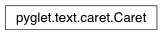

Caret Class¶
-
class
Caret(layout, batch=None, color=(0, 0, 0))¶ Visible text insertion marker for pyglet.text.layout.IncrementalTextLayout.
The caret is drawn as a single vertical bar at the document position on a text layout object. If mark is not None, it gives the unmoving end of the current text selection. The visible text selection on the layout is updated along with mark and position.
By default the layout’s graphics batch is used, so the caret does not need to be drawn explicitly. Even if a different graphics batch is supplied, the caret will be correctly positioned and clipped within the layout.
Updates to the document (and so the layout) are automatically propagated to the caret.
The caret object can be pushed onto a window event handler stack with Window.push_handlers. The caret will respond correctly to keyboard, text, mouse and activation events, including double- and triple-clicks. If the text layout is being used alongside other graphical widgets, a GUI toolkit will be needed to delegate keyboard and mouse events to the appropriate widget. pyglet does not provide such a toolkit at this stage.
Attributes:
PERIODBlink period, in seconds. SCROLL_INCREMENTPixels to scroll viewport per mouse scroll wheel movement. colorCaret color. lineIndex of line containing the caret’s position. markPosition of immovable end of text selection within document. positionPosition of caret within document. visibleCaret visibility.
Attributes¶
-
Caret.PERIOD= 0.5¶ Blink period, in seconds.
-
Caret.SCROLL_INCREMENT= 16¶ Pixels to scroll viewport per mouse scroll wheel movement. Defaults to 12pt at 96dpi.
-
Caret.color¶ Caret color.
The default caret color is
[0, 0, 0](black). Each RGB color component is in the range 0 to 255.Type: (int, int, int)
-
Caret.line¶ Index of line containing the caret’s position.
When set, position is modified to place the caret on requested line while maintaining the closest possible X offset.
Type: int
-
Caret.mark¶ Position of immovable end of text selection within document.
An interactive text selection is determined by its immovable end (the caret’s position when a mouse drag begins) and the caret’s position, which moves interactively by mouse and keyboard input.
This property is
Nonewhen there is no selection.Type: int
-
Caret.position¶ Position of caret within document.
Type: int
-
Caret.visible¶ Caret visibility.
The caret may be hidden despite this property due to the periodic blinking or by on_deactivate if the event handler is attached to a window.
Type: bool